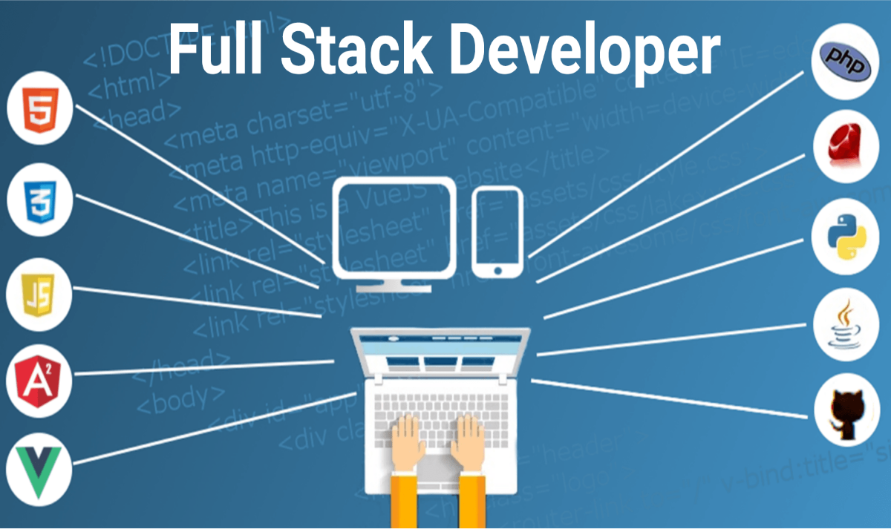

¿Que hace un programador FullStarck?
Un desarrollador full stack es un especialista en el desarrollo de sitios web que integra el diseño de la experiencia del cliente en una página (front end), así como la programación
y mantenimiento de la arquitectura interna del sitio (back end)

Jennifer Valente, Tengo 15 años, soy estudiante de la escuela Proa Transito, me gusta ir a la cancha y leer
Sofia Arguello, Tiene 15 años, es estudiante de la escuela Proa Transito, le gusta leer y escuchar musica
Mia Moyano, Tiene 15 años, es estudiante de la escuela Proa Transito, le gusta leer y jugar handball